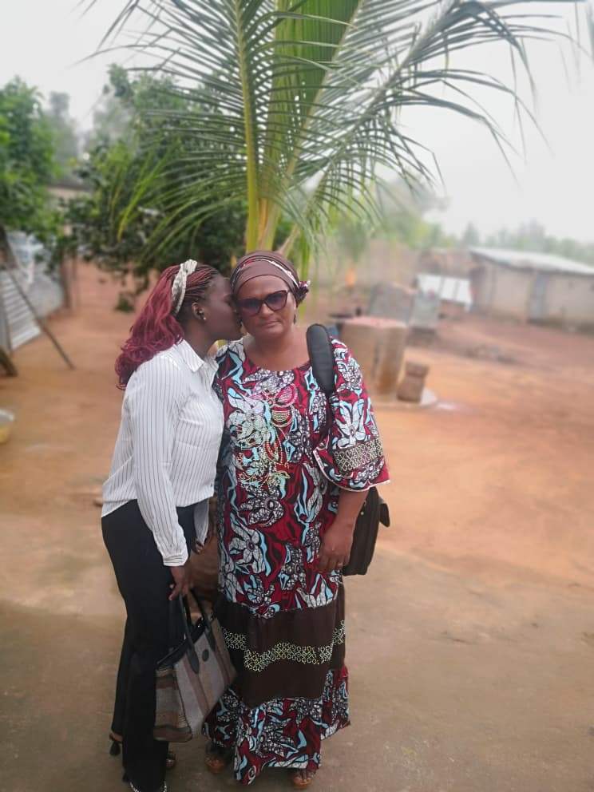

🌾
Les Ouvriers
Moisson & Intercession
156 couples prient jour et nuit et sillonnent le pays pour repérer les zones où l'Évangile n'est pas encore arrivé.
Mission Apostolique de la Parole Restaurée
Une organisation évangélique et sociale œuvrant pour l'unité du corps de Christ et le salut des âmes dans les 12 départements du Bénin.

Prophète Ganiou Luc Yessoufou
Notre Fondement
« Allez, faites de toutes les nations des disciples, les baptisant au nom du Père, du Fils et du Saint-Esprit. » — Matthieu 28:19
Née à Bonou (Ouémé), la MAPR n'est pas une simple église locale, mais un vaste réseau d'implantation et d'assistance. Sous la vision du Prophète Ganiou Luc Yessoufou, nous identifions les zones non atteintes, préparons la moisson, implantons des églises et aidons concrètement les communautés oubliées.
Ouvriers intercesseurs
24h/24
Départements
couverts
Communes
ciblées
Vision commune
Christ
Notre Organisation
Un système unique appelé OOSS, fondé sur quatre groupes qui œuvrent ensemble pour accomplir la grande recommandation du Christ.
Moisson & Intercession
156 couples prient jour et nuit et sillonnent le pays pour repérer les zones où l'Évangile n'est pas encore arrivé.
Entraide & Entrepreneuriat
Un modèle d'entrepreneuriat et de cotisations pour financer la mission et sortir les foyers chrétiens de la précarité.
Action Sociale & Salut
Des équipes de terrain qui évangélisent et répondent aux urgences sociales : orphelins, démunis, familles abandonnées.
Soutien & Partenariat
Nos donateurs et partenaires internationaux qui rendent ce miracle possible, soutenus spirituellement en retour.
Notre Réseau
Formation & Disciple Making
Évangélisation Internationale
Partenariat Local
Soutien Économique
Réseau Ecclésial
Que vous soyez un leader d'église souhaitant rejoindre le réseau, ou un donateur voulant impacter des vies au Bénin, votre place est ici.
Volet Social
L'Évangile n'est pas que des mots,
c'est aussi des actes.
Dirigé par des professionnels comptant plus de 30 ans d'expérience en santé, action sociale et protection de l'enfance, notre volet humanitaire s'attaque concrètement à la misère.
- 🏠 Construction d'orphelinats
- 👶 Assistance à l'enfance malheureuse
- 🏥 Création de centres de santé communautaires
- 💪 Soutien aux femmes abandonnées
🏥 En savoir plus
Catherine KOUAGOU
Responsable Volet Social